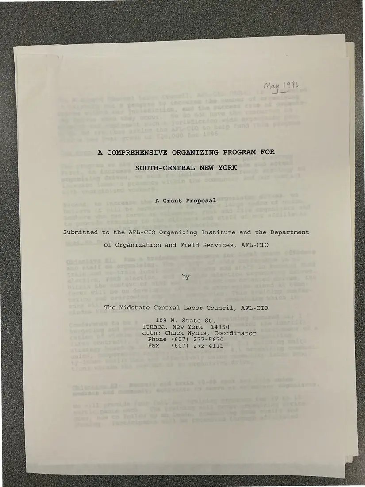
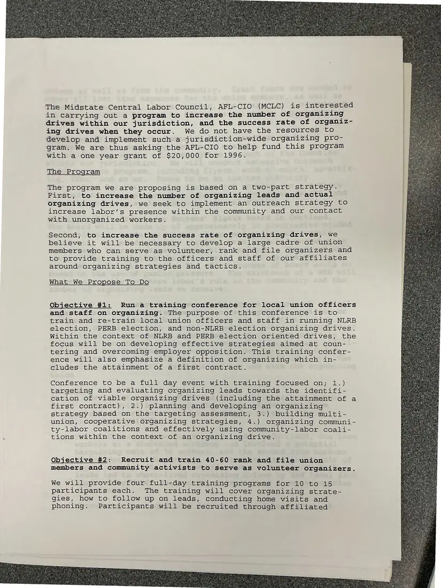
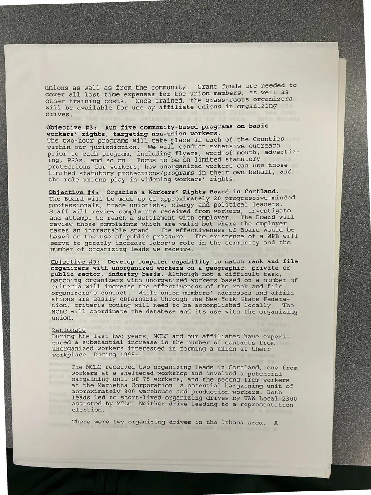
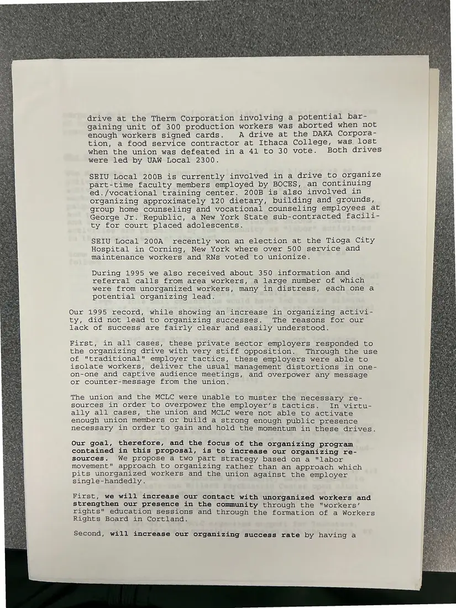
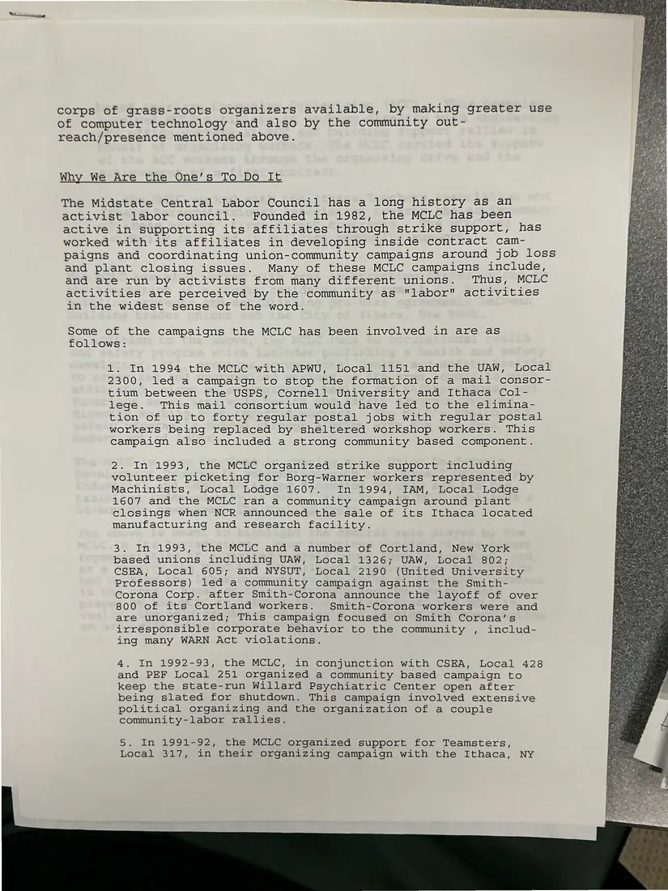
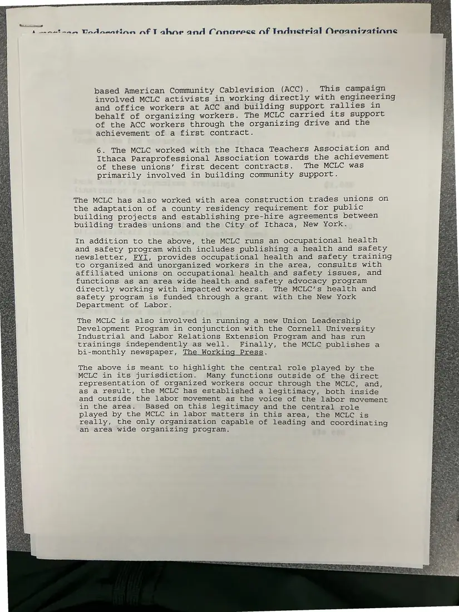
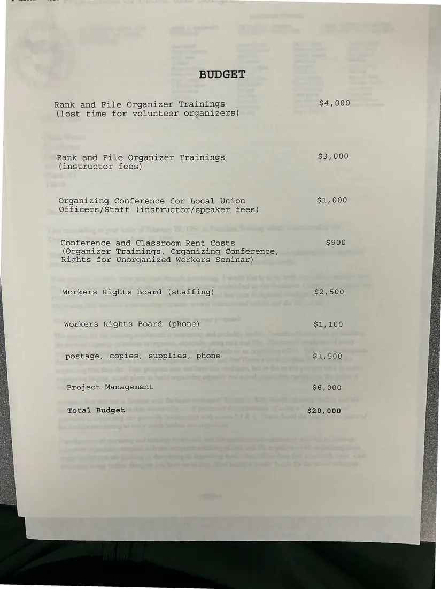

Proposal, 7 pages
“A Comprehensive Organizing Program for South-Central New York”: grant proposal
May 1996
The council's proposal to the AFL-CIO Organizing Institute and Department of Organization and Field Services, asking for $20,000 for 1996. It proposes a training conference for local officers, training 40–60 rank-and-file volunteer organizers, community workers' rights programs, a Workers' Rights Board in Cortland, and computer matching of members and leads. It also gives a history of the council's campaigns since 1982 and a budget.
Photographed back-to-front; shown here in reading order.
Download or cite this itemPages


(open zoom view)Read the page text (machine-read, mostly readable)
This text was generated automatically from the photograph and has not been corrected. The image is the authoritative record.
A COMPREHENSIVE ORGANIZING PROGRAM FOR SOUTH-CENTRAL NEW YORK A Grant Proposal Submitted to the AFL-CIO Organizing Institute and the Department of Organization and Field Services, AFL-CIO The Midstate Central Labor Council, AFL-CIO 109 W. State St. Ithaca, New York 14850 attn: Chuck Wynns, Coordinator Phone (607) 277-5670 Fax (607) 272-4111


(open zoom view)Read the page text (machine-read, mostly readable)
This text was generated automatically from the photograph and has not been corrected. The image is the authoritative record.
The Midstate Central Labor Council, AFL-CIO (MCLC) is interested in carrying out a program to increase the number of organizing drives within our jurisdiction, and the success rate of organiz- ing drives when they occur. We do not have the resources to develop and implement such a jurisdiction-wide organizing pro- gram. We are thus asking the AFL-CIO to help fund this program with a one year grant of $20,000 for 1996. The Program The program we are proposing is based on a two-part strategy. First, to increase the number of organizing leads and actual organizing drives, we seek to implement an outreach strategy to increase labor’s presence within the community and our contact with unorganized workers. Second, to increase the success rate of organizing drives, we believe it will be necessary to develop a large cadre of union members who can serve as volunteer, rank and file organizers and to provide training to the officers and staff of our affiliates around organizing strategies and tactics. What We Propose To Do Objective #1: Run a training conference for local union officers and staff on organizing. The purpose of this conference is to train and re-train local union officers and staff in running NLRB election, PERB election, and non-NLRB election organizing drives. Within the context of NLRB and PERB election oriented drives, the focus will be on developing effective strategies aimed at coun- tering and overcoming employer opposition. This training confer- ence will also emphasize a definition of organizing which in- cludes the attainment of a first contract. Conference to be a full day event with training focused on; 1.) targeting and evaluating organizing leads towards the identifi- cation of viable organizing drives (including the attainment of a first contract), 2.) planning and developing an organizing strategy based on the targeting assessment, 3.) building multi- union, cooperative organizing strategies, 4.) organizing communi- ty-labor coalitions and effectively using community-labor coali- tions within the context of an organizing drive. Objective #2: Recruit and train 40-60 rank and file union members and community activists to serve as volunteer organizers. We will provide four full-day training programs for 10 to 15 participants each. The training will cover organizing strate- gies, how to follow up on leads, conducting home visits and phoning. Participants will be recruited through affiliated


(open zoom view)Read the page text (machine-read, mostly readable)
This text was generated automatically from the photograph and has not been corrected. The image is the authoritative record.
unions as well as from the community. Grant funds are needed to cover all lost time expenses for the union members, as well as other training costs. Once trained, the grass-roots organizers will be available for use by affiliate unions in organizing drives. Objective #3: Run five community-based programs on basic workers‘ rights, targeting non-union workers. ' The two-hour programs will take place in each of the Counties within our jurisdiction. We will conduct extensive outreach — prior to each program, including flyers, word-of-mouth, advertiz- ing, PSAs. and so on. Focus to be on limited statutory protections for workers, how unorganized workers can use those limited statutory protections/programs in their own behalf, and the role unions play in widening workers’ rights. Objective #4: Organize a Workers’ Rights Board in Cortland. The Board will be made up of approximately 20 progressive-minded professionals, trade unionists, clergy and political leaders. Staff will review complaints received from workers, investigate and attempt to reach a settlement with employer. The Board will review those complaints which are valid but where the employer takes an intractable stand. The effectiveness of Board would be based on the use of public pressure. The existence of a WRB will serve to greatly increase labor’s role in the community and the number of organizing leads we receive. Objective #5: Develop computer capability to match rank and file organizers with unorganized workers on a geographic, private or public sector, industry basis. Although not a difficult task, Matching organizers with unorganized workers based on a number of criteria will increase the effectiveness of the rank and file organizers’s contact. While union members’ addresses and affili- ations are easily obtainable through the New York State Federa- tion, criteria coding will need to be accomplished locally. The MCLC will coordinate the database and its use with the organizing union. Rationale During the last two years, MCLC and our affiliates have experi- enced a substantial increase in the number of contacts from unorganized workers interested in forming a union at their workplace. During 1995: The MCLC received two organizing leads in Cortland, one from workers at a sheltered workshop and involved a potential bargaining unit of 75 workers, and the second from workers at the Marietta Corporation, a potential bargaining unit of approximately 300 warehouse and production workers. Both leads led to short-lived organizing drives by UAW Local 2300 assisted by MCLC. Neither drive leading to a representation election. There were two organizing drives in the Ithaca area. A


(open zoom view)Read the page text (machine-read, mostly readable)
This text was generated automatically from the photograph and has not been corrected. The image is the authoritative record.
drive at the Therm Corporation involving a potential bar- gaining unit of 300 production workers was aborted when not enough workers signed cards. A drive at the DAKA Corpora- tion, a food service contractor at Ithaca College, was, lost when the union was defeated in a 41 to 30 vote. Both drives were led by UAW Local 2300. SEIU Local 200B is currently involved in a drive to organize part-time faculty members employed by BOCES, an continuing ed./vocational training center. 200B is also involved in organizing approximately 120 dietary, building and grounds, group home counseling and vocational counseling employees at George Jr. Republic, a New York State sub-contracted facili- ty for court placed adolescents. SEIU Local 200A recently won an election at the Tioga Carsy: Hospital in Corning, New York where over 500 service and Maintenance workers and RNs voted to unionize. During 1995 we also received about 350 information and | referral calls from area workers, a large number of which were from unorganized workers, many in distress, each one a potential organizing lead. Our 1995 record, while showing an increase in organizing activi- ty, did not lead to organizing successes. The reasons for our lack of success are fairly clear and easily understood. First, in all cases, these private sector employers responded to the organizing drive with very stiff opposition. Through the use of "traditional" employer tactics, these employers were able to isolate workers, deliver the usual management distortions in one- on-one and captive audience meetings, and overpower any message or counter-message from the union. The union and the MCLC were unable to muster the necessary re- sources in order to Overpower the employer’s tactics. In virtu- ally all cases, the union and MCLC were not able to activate enough union members or build a strong enough public presence necessary in order to gain and hold the momentum in these drives. Our goal, therefore, and the focus of the organizing program contained in this proposal, is to increase our organizing re- sources. We propose a two part strategy based on a "labor movement" approach to organizing rather than an approach which pits unorganized workers and the union against the employer single-handedly. First, we will increase our contact with unorganized workers and strengthen our presence in the community through the "workers’ rights" education sessions and through the formation of a Workers Rights Board in Cortland. Second, will increase our organizing success rate by having a


(open zoom view)Read the page text (machine-read, mostly readable)
This text was generated automatically from the photograph and has not been corrected. The image is the authoritative record.
corps of grass-roots organizers available, by making greater use of computer technology and also by the community out- reach/presence mentioned above. Why We Are the One’s To Do It The Midstate Central Labor Council has a long history as an activist labor council. Founded in 1982, the MCLC has been active in supporting its affiliates through strike support, has worked with its affiliates in developing inside contract cam- paigns and coordinating union-community campaigns around job loss and plant closing issues. Many of these MCLC campaigns include, and are run by activists from many different unions. Thus, MCLC activities are perceived by the community as "labor" activities in the widest sense of the word. Some of the campaigns the MCLC has been involved in are as follows: 1. In 1994 the MCLC with APWU, Local 1151 and the UAW, Local 2300, led a campaign to stop the formation of a mail consor- tium between the USPS, Cornell University and Ithaca Col- lege. This mail consortium would have led to the elimina- tion of up to forty regular postal jobs with regular postal workers being replaced by sheltered workshop workers. This Campaign also included a strong community based component. 2. In 1993, the MCLC organized strike support including volunteer picketing for Borg-Warner workers represented by Machinists, Local Lodge 1607. In 1994, IAM, Local Lodge 1607 and the MCLC ran a community campaign around plant closings when NCR announced the sale of its Ithaca located manufacturing and research facility. 3. In 1993, the MCLC and a number of Cortland, New York based unions including UAW, Local 1326; UAW, Local 802; CSEA, Local 605; and NYSUT, Local 2190 (United University Professors) led a community campaign against the Smith- Corona Corp. after Smith-Corona announce the layoff of over 800 of its Cortland workers. Smith-Corona workers were and are unorganized; This campaign focused on Smith Corona’s irresponsible corporate behavior to the community , includ- ing many WARN Act violations. 4, In 1992-93, the MCLG) in conjunction with CSEA, Local 428 and PEF Local 251 organized a community based campaign to keep the state-run Willard Psychiatric Center open after being slated for shutdown. This campaign involved extensive political organizing and the organization of a couple community-labor rallies. 5. In 1991-92, the MCLC organized support for Teamsters, Local 317, in their organizing campaign with the Ithaca, NY


(open zoom view)Read the page text (machine-read, mostly readable)
This text was generated automatically from the photograph and has not been corrected. The image is the authoritative record.
A aanetnnen Dndaentino af Tahar and Caonorecc of Inductrial Oroanizatione based American Community Cablevision (ACC). This campaign involved MCLC activists in working directly with engineering and office workers at ACC and building support rallies in behalf of organizing workers. The MCLC carried its support of the ACC workers through the organizing drive and the achievement of a first contract. 6. The MCLC worked with the Ithaca Teachers Association and Ithaca Paraprofessional Association towards the achievement of these unions’ first decent contracts. The MCLC was primarily involved in building community support. The MCLC has also worked with area construction trades unions on the adaptation of a county residency requirement for public building projects and establishing pre-hire agreements between Ee building trades unions and the City of Ithaca, New York. iy In addition to the above, the MCLC runs an occupational health and safety program which includes publishing a health and safety newsletter, FYI, provides occupational health and safety training to organized and unorganized workers in the area, consults with affiliated unions on occupational health and safety issues, and ie functions as an area wide health and safety advocacy program pe directly working with impacted workers. The MCLC’s health and safety program is funded through a grant with the New York Department of Labor. The MCLC is also involved in running a new Union Leadership Development Program in conjunction with the Cornell University Industrial and Labor Relations Extension Program and has run trainings independently as well. Finally, the MCLC publishes a bi-monthly newspaper, The Working Press. The above is meant to highlight the central role played by the MCLC in its jurisdiction. Many functions outside of the direct representation of organized workers occur through the MCLC, and, as a result, the MCLC has established a legitimacy, both inside and outside the labor movement as the voice of the labor movement ve in the area. Based on this legitimacy and the central role oe) played by the MCLC in labor matters in this area, the MCLC is oa really, the only organization capable of leading and coordinating an area wide organizing program.


(open zoom view)Read the page text (machine-read, mostly readable)
This text was generated automatically from the photograph and has not been corrected. The image is the authoritative record.
BUDGET Rank and File Organizer Trainings $4,000 (lost time for volunteer organizers) Rank and File Organizer Trainings 33, 000 (instructor fees) Organizing Conference for Local Union $1,000 Officers/Staff (instructor/speaker fees) Conference and Classroom Rent Costs $900 (Organizer Trainings, Organizing Conference, Rights for Unorganized Workers Seminar) Workers Rights Board (staffing) $2,500 Workers Rights Board (phone) S100 postage, copies, supplies, phone $1,500 = Project Management $6,000 a4 Total Budget $20,000 SE Ten
See something wrong, or recognize a person or event? Send a correction. If you hold rights in this item or think it should not be public, write to the same address.